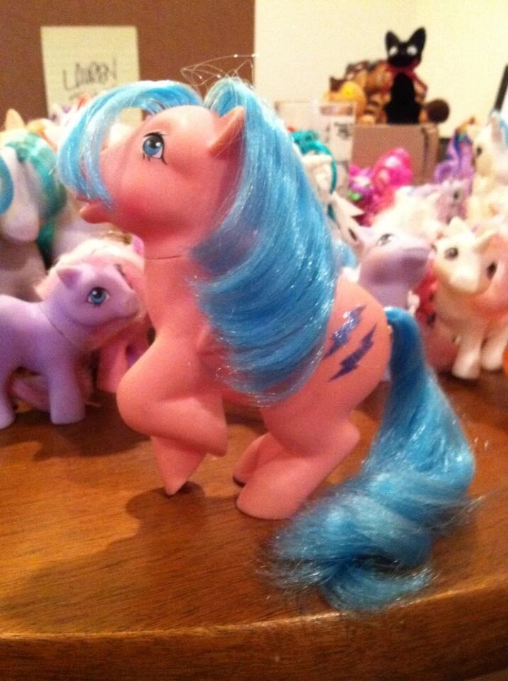
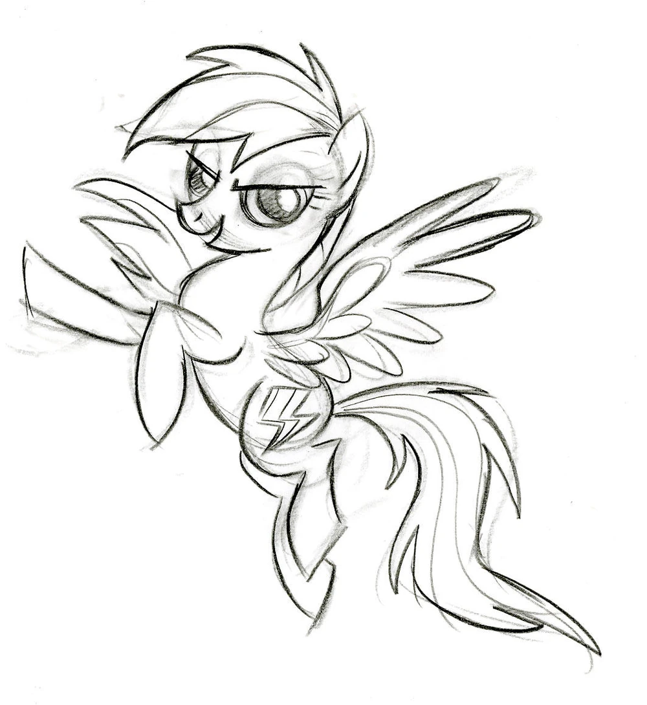
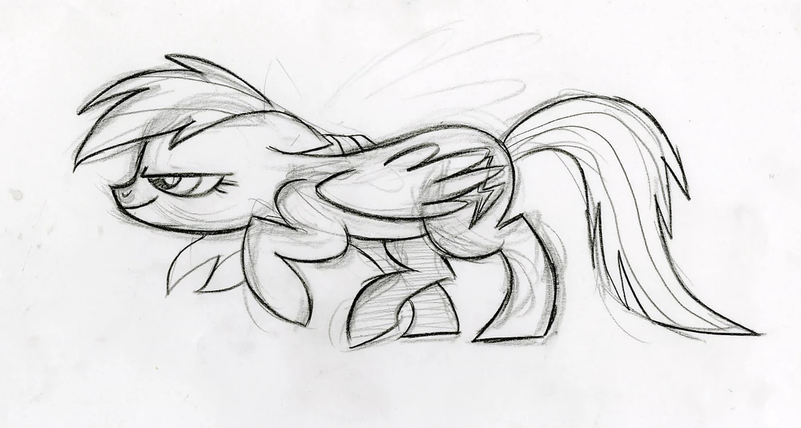
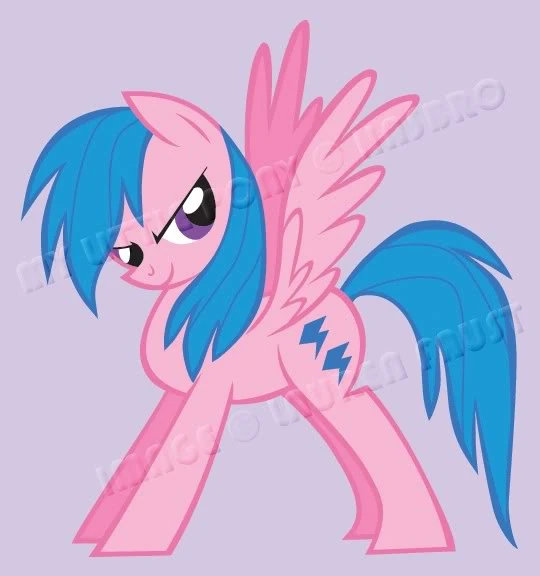

Rainbow Dash

✧ Le encanta la velocidad, la acción, aventura. Es una pegaso que vive en Ponyville, su casa es una nube :9. Su sueño era llegar a ser una Wonderbolt.
Su cutie mark es una nube con un rayo multicolor que representa su talento en la velocidad, el control del clima y su pasión por la acción.
El elemento de la armonía que ella representa es el de la lealtad.
Su voz original es hecha por Ashleigh Ball y su voz doblada por Analiz Sánchez
❁ ◡ ❁ ◡ ❁ ◡ ❁ ◡ ❁ ◡ ❁ ◡ ❁ ◡ ❁ ◡ ❁ ◡ ❁ ◡ ❁ ◡ ❁ ◡ ❁ ◡ ❁ ◡ ❁ ◡ ❁ ◡ ❁ ◡ ❁ ◡ ❁
Diseño
Para Rainbow Dash, la diseñadora se basó en el personaje de la G1 Firefly:
|  |  |
|  |  |